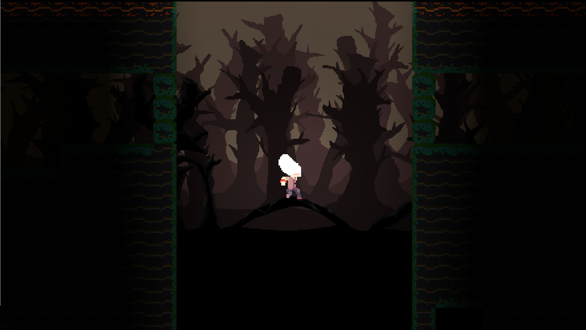
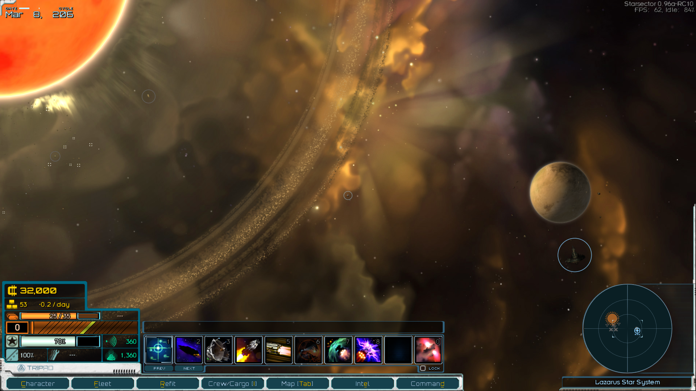
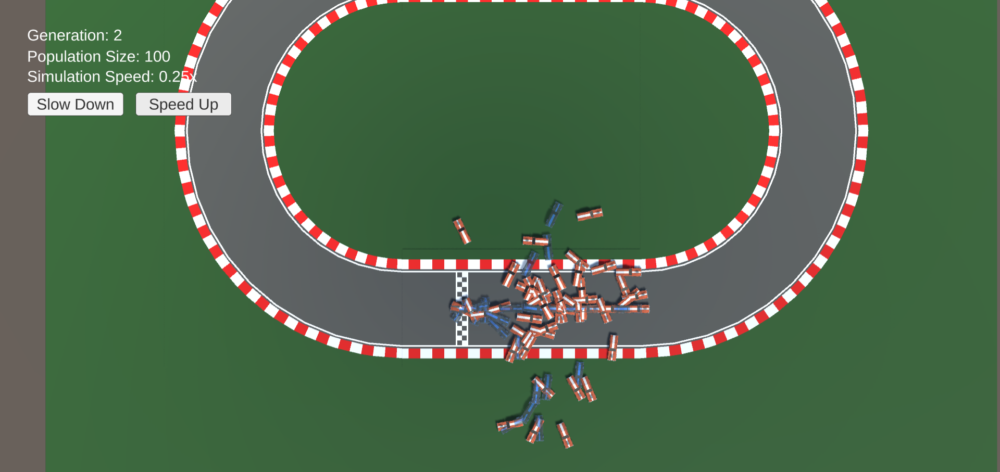
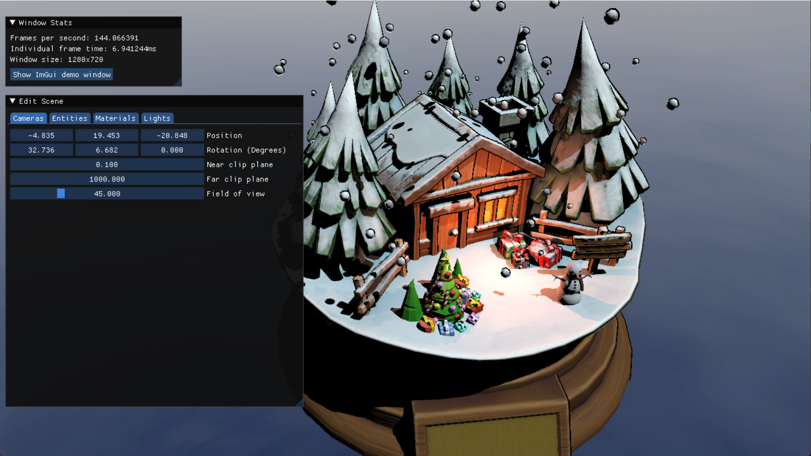
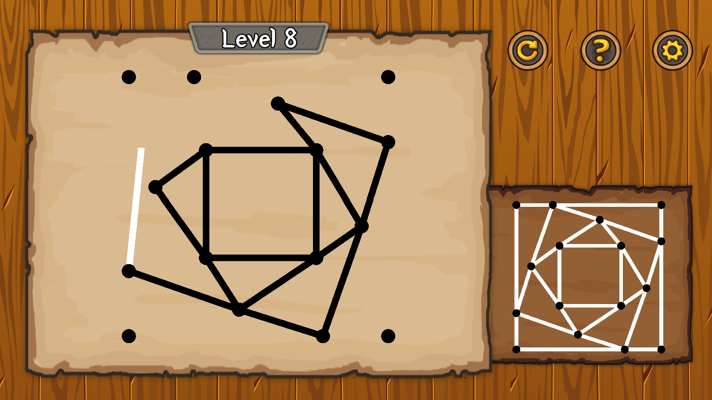
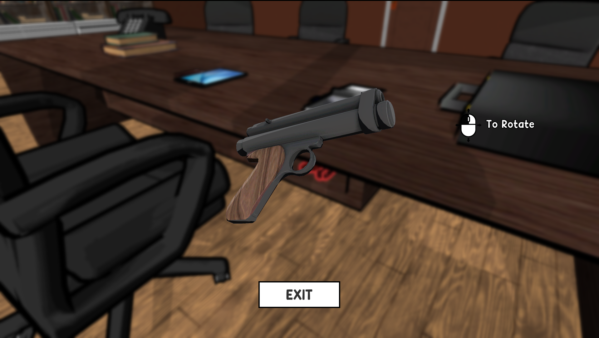
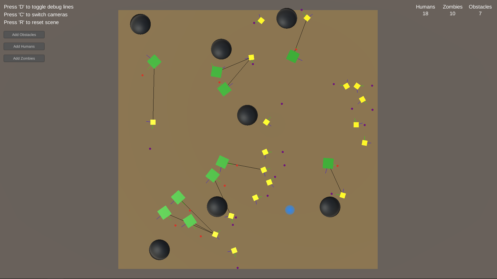
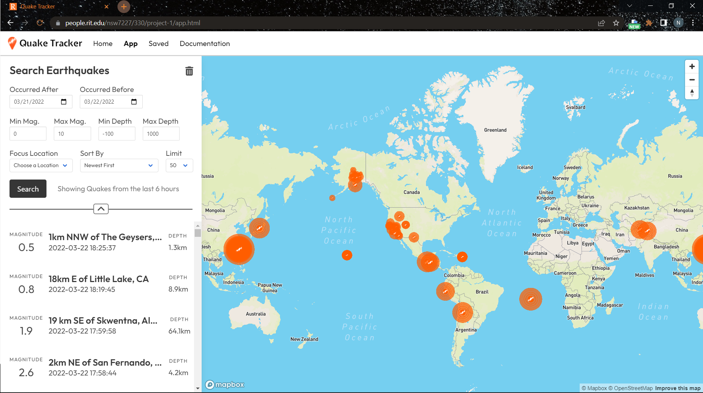
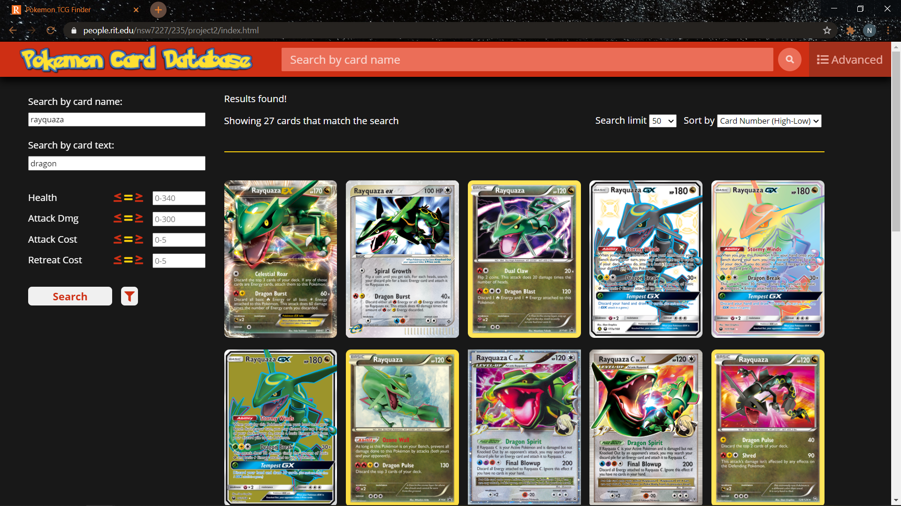

Projects
Mystic Forest
A 2D platformer developed in Unity and focused on level design. Made alongside a team of 4 where every member was tasked to create their own level that flows nicely into all the other levels created by the team. I created the fourth level around the concept of entering the dark forest and using lights placed in the level to make your way through the darkness. In addition to creating a level, I also programmed the mechanics of the game. These include: moving, jumping, wall sliding, wall jumping, and dashing. Players can also dash into certain tiles to break them and activate lights and switches to progress through each level.
Starsector Mod: Dead Man's Riot Quest
A quest mod of the game Starsector created for a class project and published publicly to NexusMods. Explore an unknown solar system and find out what the mega corporation Tri-tachyon has been keeping hidden for many years. Pick a side in the ongoing battle once there, put an end to the whole operation, and leave with a new and dangerous weapon to add to your arsenal. Starsector is a fairly unknown open world space RPG that is technically still pre-release, but has been worked on for over 10 years. Starsector has an active modding community and plenty of helpful resources within its wiki, discord, and forums. Even still, learning the codebase, working within it, and fixing all resulting errors by the end were quite the challenge. This was a group project with a group of 4. My role was map implementation and asset design, but I also helped a lot with mission sequencing and fixing errors in the code.
Racecar Evolution
An interactive simulation showcasing a genetic algorithm of a racecar learning to drive on a track. Users first create a looped racetrack using the built-in track creator, then once they hit play the simulation will start. During the simulation, batches of racecar AI are placed into the simulation in generations. Each racecar agent starts with a randomized set of instructions to complete the track, and as each generation ends a new generation is made by "evolving" the previous generation. This means selecting a certain number cars that had the best run and using their set of instructions or "chromosome" as the basis of the new generation. This process is set to continue until an agent is found who completed the track at a high level of quality. This project was my introduction to genetic algorithms and can certainly be improved, but remains a good display of the algorithm's process and adaptability.
Basic Rendering Engine
A custom rendering engine built with C++ and utilizing DirectX 11. This was a semester-long class project where every new feature was added one assignment at a time. Features individually worked on and implemented are: virtual camera, camera controls, skyboxes, Dear ImGui UI for runtime modification, custom pixel and vertex shaders written in hlsl, game entities with associated transforms, meshes, and PBR materials, multiple light types, and shadow maps. The project also makes use of the professor's own SimpleShader library which makes the process of implementing and integrating shaders into a DirectX application a lot more convenient. I really enjoyed working on this project and put all my effort into making the engine as functional as possible but also structuring the code in a organized and understandable way. As such, this project serves as the best example of my skill with C++.
Talisman of Ethshar
A connect-the-dots style puzzle game crafted in Unity and inspired by the Ethshar universe. Talisman of Ethshar consists of 15 levels of increasingly difficult puzzles where you are tasked with recreating the "talisman" image in the bottom right by connecting the dots one-by-one. You can start your line at any dot and can connect to any dot from there but you cannot go back across a line you've already drawn. As you progress through the game, new mechanics are introduced that keep the puzzles fresh, fun, and challenging. This was a group project and my responsibilities were designing most of the puzzles, creating the look and feel of the game, and programming the functionality for connecting dots and checking if the puzzle has been correctly solved.
Dresden Files: Skyline
A 3D Murder Mystery game built in Unity and set in the Dresden Files universe. Players are able to search multiple open scenes for any clues that will help them decifer the strange unexplained murder before them. Then, speak with the suspects to see every side of the story and piece together what really happened. This was a group project and my contribution was mainly the level design, the sequencing of the series of events, and some of the functionality of interacting with clues and tracking the players' interactions.
Investment Andes

A fast-paced and high stakes card game intended for play in tabletop simulator. Make smart investments into buildings that you think will give you the most benefit and use any action cards you get to give yourself an advantage over the other players. The game only continues while there is still money left in the deck, so once the economy dries up, the player with the most money wins. Investment Andes was a group project and my contribution, along with my other teammates, was the balancing of the game, the ideas for buildings and action cards, and the rules of the game.
Autonomous Agents: Humans vs. Zombies
An interactive simulation designed in Unity where autonomous human and zombie "players" move independently through a system of steering forces. These forces are based on their desires to either flee from zombies or catch any humans. Both humans and zombies will also avoid obstacles, stay within the boundaries, and separate from each other if they are extremely close to prevent stacking. The simulation has defaults for the amount of humans, zombies, and obstacles but the player is able to add more in realtime. There are also options for multiple camera views and debug mode which gives more details about each object's movement during runtime.
Quake Tracker
A web application I designed that by default shows you the earthquakes that have occurred in the world in the past 6 hours, but also allows you to search a large database of recorded earthquakes with various parameters. I used the USGS Earthquake Catalog API as the database for the application and mapped the data received from the API with Mapbox. Earthquakes are dynamically sized proportionate to their magnitude, and can each be selected and focused on. The earthquakes can also be saved to another page for quick access or for going to the official site for that earthquake and seeing more information. You can search and filter earthquake results by the time of the quake, its magnitude, its depth, and by location. I also made it so the whole site is responsive and can be viewed and used on almost all devices.
Pokemon TCG Card Finder
A website I designed and created that uses Javascript and the Pokemon TCG API that allows the user to search for any Pokemon card using multiple search options and filters. Once the user finds a card that they want to learn more about or see a clearer picture of, they can simply click on the card and they are taken to a new page that has a higher resolution picture of the card as well as all the important details of the card given in a much easier to read design. The website is mainly for users who already know a fair amount about Pokemon cards and are looking for something specific, but it helps users who might not know as much by restricting number inputs to the valid range and certain filters so that there are fewer invalid queries to the API. The site is also fully responsive with the exception of the filter popout not fitting the screens of some mobile phones.